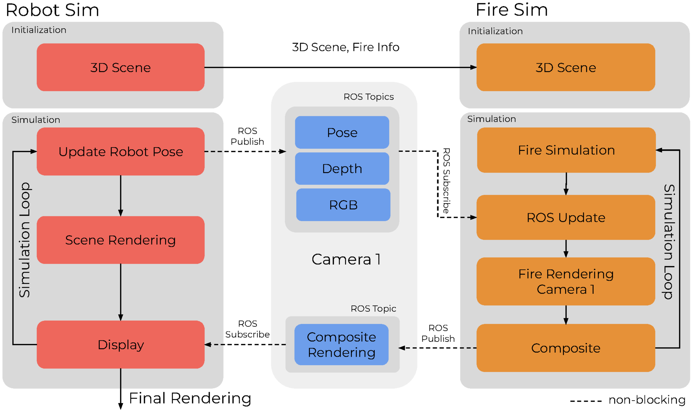
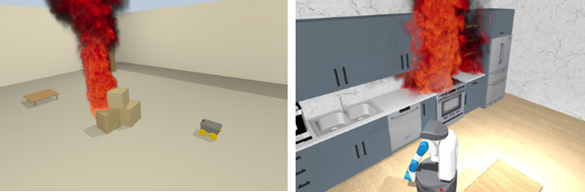
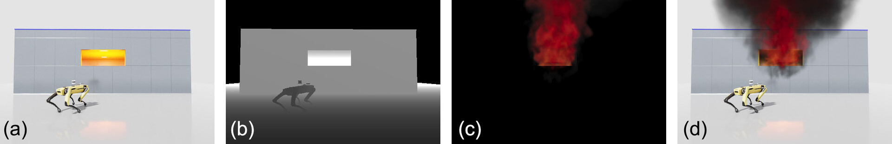
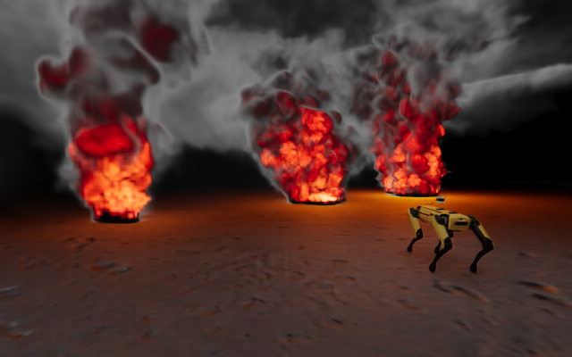
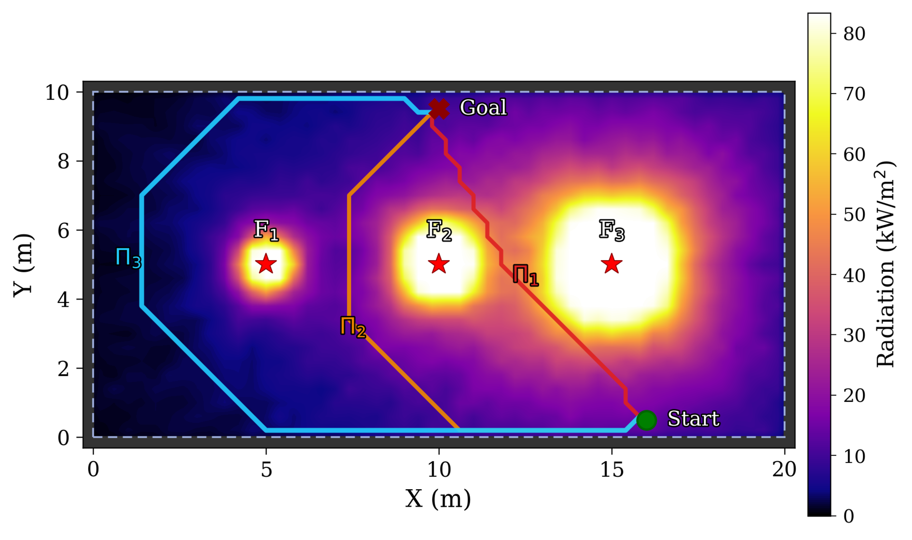
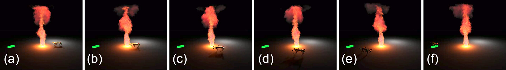

Abstract
Most existing robot simulators prioritize rigid-body dynamics and photorealistic rendering, but largely neglect the thermally and optically complex phenomena that characterize real-world fire environments. For robots envisioned as future firefighters, this limitation hinders both reliable capability evaluation and the generation of representative training data prior to deployment in hazardous scenarios. To address these challenges, we introduce Fire as a Service (FaaS), a novel, asynchronous co-simulation framework that augments existing robot simulators with high-fidelity and computationally efficient fire simulations. Our pipeline enables robots to experience accurate, multi-species thermodynamic heat transfer and visually consistent volumetric smoke without disrupting high-frequency rigid-body control loops. We demonstrate that our framework can be integrated with diverse robot simulators to generate physically accurate fire behavior, benchmark thermal hazards encountered by robotic platforms, and collect realistic multimodal perceptual data. Crucially, its real-time performance supports human-in-the-loop teleoperation, enabling the successful training of reactive, multimodal policies via Behavioral Cloning. By adding fire dynamics to robot simulations, FaaS provides a scalable pathway toward safer, more reliable deployment of robots in fire scenarios.
Video
Asynchronous Fire Co-Simulation
FaaS treats fire as an external service that evolves independently in a high-fidelity combustion solver, rather than baking it into the robot's control loop. We build on Fire-X, a GPU-accelerated hybrid solver with multi-species thermochemistry, validated against real compartment-fire experiments and NIST's Fire Dynamics Simulator. The robot simulator streams camera pose, depth, and scene geometry over ROS; the fire simulator rolls out thermodynamic dynamics, renders a viewpoint-consistent alpha-matted image of flame and smoke, and composites it back onto the robot's RGB observations. Because the two run asynchronously and non-blocking — each always using the latest available data — the robot's control loop is never paused, keeping end-to-end latency low enough for real-time augmentation and teleoperation.

The system asynchronously couples a conventional robot simulator (red) with an external fire simulator (orange) via a non-blocking ROS data bridge. Camera pose, depth, and RGB are published best-effort; the fire simulator renders a viewpoint-consistent, alpha-matted flame/smoke image that is composited back onto the robot's sensors.

Engine-agnostic by design: besides Isaac Sim, FaaS superimposes scene-aware fire on established simulators such as Gazebo (left) and MuJoCo (right).
Key Capabilities
- Thermally accurate hazard modeling that quantifies heat radiation and cumulative thermal risk to robotic hardware.
- Visually consistent fire and smoke dynamics that augment camera-based perception in a physically grounded manner.
- A high-performance co-simulation architecture with temporal resolution sufficient for both human-in-the-loop teleoperation and high-frequency reactive safety controllers, enabling reactive, thermally-informed policies trained via Behavioral Cloning.
- Engine-agnostic interoperability, with seamless integration demonstrated across Isaac Sim, Gazebo, and MuJoCo.
Results

Scene-aware compositing: a fire rendering (c) is combined with an RGB frame (a) and its depth map (b) to produce a geometrically consistent fire burning behind a wall (d).

Multi-fire scenario in Isaac Sim: three combustion sources of increasing intensity produce distinct plume heights and asymmetric smoke volumes.

Time-averaged thermal-radiation costmap of the three-fire scenario with three A*-planned paths. Fire sources F1–F3 (increasing size) drive the incident-radiation heatmap that shapes each path.

High-frequency thermally reactive control: as incident radiation rises the robot is steered away from the fire (c, d), then resumes toward the goal in green (e) and reaches it safely (f).
BibTeX
@misc{wagner2026faas,
title = {Fire as a Service: Augmenting Robot Simulators with Thermally and Visually Accurate Fire Dynamics},
author = {Wagner, Anton R. and Rao, Madhan B. and Wrede, Helge and Pirk, S{\"o}ren and Xiao, Xuesu},
year = {2026},
eprint = {2603.19063},
archivePrefix = {arXiv},
primaryClass = {cs.RO},
url = {https://arxiv.org/abs/2603.19063}
}